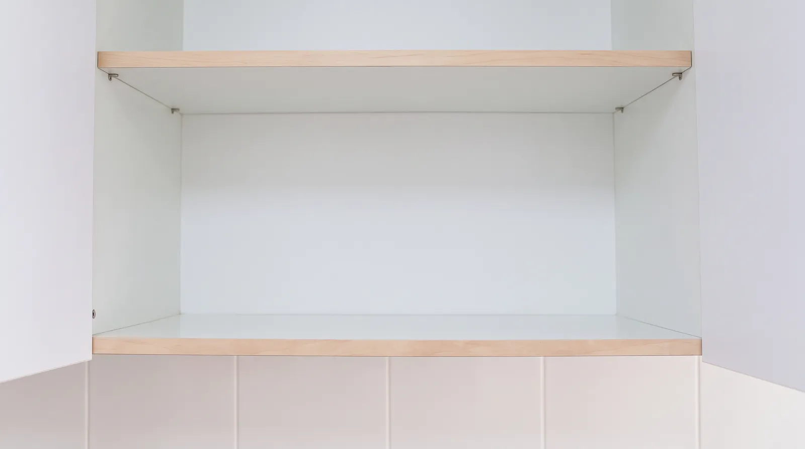
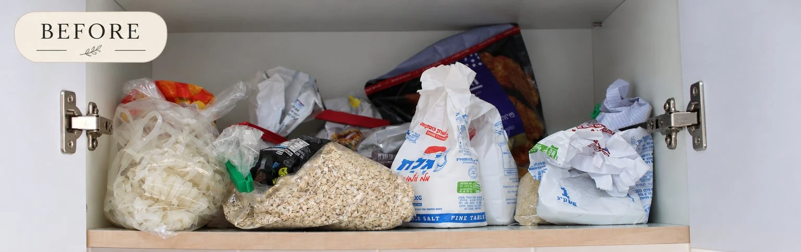

We organize your home.You gain peace of mind.
We sort, tidy and set up storage, so the result is easy to keep.

BeforeAfter
How we work
Practical, tidy and easy to use
When we come in to sort and organize, it is very important to us to focus on practicality and make sure the result is clean, tidy and easy to use.
During the session itself, we bring along storage solutions and boxes tailored to your needs, ones that will help maintain the order over time.
- 01SortEverything out, what stays and what goes.
- 02TidyClean and in order.
- 03Set up storageBoxes tailored to you, so it is easy to keep.
Real before and after photos
Before and after



Price
₪160an hour
- Accessories not includedThe hourly price is for the session.
- Jerusalem and Beit ShemeshWhere we work.
- 09:00 to 23:00Hours you can book.
From our sessions
A home you love, in order.
WhatsApp or call +972 55 673 0875
Email noare2133@gmail.com